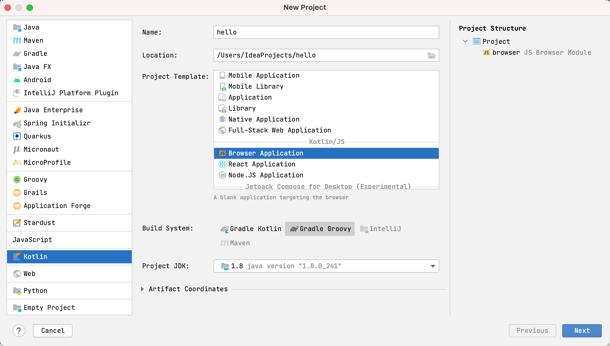

type: doc layout: reference category: "JavaScript"
title: "搭建 Kotlin/JS 项目"
搭建 Kotlin/JS 项目
Kotlin/JS 项目使用 Gradle 作为构建系统。为了开发者轻松管理其 Kotlin/JS 项目，我们提供了
kotlin/js Gradle 插件，该插件提供项目配置工具以及用以自动执行 JavaScript
开发中常用的例程的帮助程序。例如，该插件会在后台下载 Yarn 软件包管理器，
用于管理 npm 依赖，并且可以使用 webpack 由 Kotlin 项目构建 JavaScript 包。
可以直接从 Gradle 构建文件中对依赖项管理与配置进行很大程度的调整，并且可以选择覆盖自动生成的配置以实现完全控制。
要在 IntelliJ IDEA 中创建 Kotlin/JS 项目，请转至 文件(File) | 新建(New) | 项目(Project)。 然后选择 Kotlin 并选择最适合的 Kotlin/JS 目标。不要忘记选择构建脚本的语言：Groovy 或 Kotlin。

另外，还可以在 Gradle 构建文件 (build.gradle 或 build.gradle.kts) 中手动将 org.jetbrains.kotlin.js 插件应用于 Gradle 项目。
Groovy DSL
plugins {
id 'org.jetbrains.kotlin.js' version '1.4.30'
}
Kotlin DSL
plugins {
kotlin("js") version "1.4.30"
}
Kotlin/JS Gradle 插件可让你在构建脚本的 kotlin 部分中管理项目的各个方面。
Groovy DSL
kotlin {
//...
}
在 kotlin 部分中，你可以管理以下方面：
- 选择执行环境: 浏览器或 Node.js
- 管理依赖: Maven 和 npm
- 配置 run 任务
- 配置 test 任务
- 为浏览器项目配置 webpack 绑定与模块名
- 分发目标目录与模块名
- 项目的
package.json文件
选择执行环境
Kotlin/JS 项目可以针对两个不同的执行环境：
- Browser，用于浏览器中客户端脚本
- Node.js，用于在浏览器外部运行 JavaScript 代码，例如，用于服务器端脚本。
要定义 Kotlin/JS 项目的目标执行环境，请在 js 部分添加 browser {} 或 nodejs {}。
Groovy DSL
kotlin {
js {
browser {
}
binaries.executable()
}
}
指令 binaries.executable() 明确指示 Kotlin 编译器发出可执行的 .js文件。使用当前的 Kotlin/JS 编译器时，这是默认行为，但是如果正在使用 Kotlin/JS IR 编译器或在 gradle.properties 中设置了 kotlin.js.generate.executable.default=false。在这些情况下，省略 binaries.executable() 将导致编译器仅生成 Kotlin 内部的库文件，该文件可以从其他项目中使用，而不能单独运行。（这通常比创建可执行文件快，并且在处理项目的非叶模块时可以是一种优化。）
Kotlin/JS 插件会自动配置其任务与所选环境配合工作。 这项操作包括下载与安装运行和测试应用程序所需的环境与依赖项。这让开发者无需额外配置就可以构建、运行和测试简单项目。
管理依赖
就像其他任何的 Gradle 项目一样，Kotlin/JS 项目支持位于构建脚本的 dependencies
部分的传统 Gradle 依赖声明。
Groovy DSL
dependencies {
implementation 'org.example.myproject:1.1.0'
}
Kotlin DSL
dependencies {
implementation("org.example.myproject", "1.1.0")
}
Kotlin/JS Gradle 插件还支持构建脚本的 kotlin 部分中特定
sourceSets 的依赖声明。
Groovy DSL
kotlin {
sourceSets {
main {
dependencies {
implementation 'org.example.myproject:1.1.0'
}
}
}
}
Kotlin DSL
kotlin {
sourceSets["main"].dependencies {
implementation("org.example.myproject", "1.1.0")
}
}
请注意，在针对 JavaScript 时，并非所有适用于 Kotlin 编程语言的库都可用：仅可以使用包含 Kotlin/JS 构件的库。
如果添加的库对来自 npm 的包有依赖，Gradle 也会自动解析这些传递依赖。
Kotlin 标准库
所有 Kotlin/JS 项目都必须依赖 Kotlin/JS 标准库，并且是隐含的——无需添加任何构件。如果你的项目包含用 Kotlin 编写的测试，那么还应该添加 kotlin.test 依赖项：
Groovy DSL
dependencies {
testImplementation 'org.jetbrains.kotlin:kotlin-test-js'
}
Kotlin DSL
dependencies {
testImplementation(kotlin("test-js"))
}
npm 依赖
在 JavaScript 中，管理依赖项最常用的方式是 npm。 它提供了最大的 JavaScript 模块公开存储库。
Kotlin/JS Gradle 插件使你可以在 Gradle 构建脚本中声明 npm 依赖项，类似于声明其他依赖项的方式。
要声明 npm 依赖项，将其名称与版本传给依赖项声明内的 npm() 函数。还可以根据 npm 的 semver 语法指定一个或多个版本范围。
Groovy DSL
dependencies {
implementation npm('react', '> 14.0.0 <=16.9.0')
}
Kotlin DSL
dependencies {
implementation(npm("react", "> 14.0.0 <=16.9.0"))
}
要在构建期间下载并安装声明的依赖项，该插件管理将自动安装 Yarn 包管理器。
除了常规的依赖之外，还有三种依赖类型可以从 Gradle DSL 中使用。要了解更多关于哪种类型的依赖最适合使用的信息，请查看 npm 链接的官方文档：
- devDependencies，经过
devNpm(...), - optionalDependencies 经过
optionalNpm(...)，与 - peerDependencies 经过
peerNpm(...).
安装 npm 依赖项后，你可以按照在 Kotlin 中调用 JS 中所述，在代码中使用其 API。
配置 run 任务
Kotlin/JS 插件提供了一个 run 任务，使你无需额外配置即可运行纯 Kotlin/JS 项目。
对于运行 Kotlin/JS 项目在浏览器中，此任务是 browserDevelopmentRun 任务的别名（在 Kotlin 多平台项目中也可用）。它使用 webpack-dev-server 来服务 JavaScript 构件。
如果要自定义 webpack-dev-server 的配置，例如更改服务器端口，请使用 webpack 配置文件。
对于运行针对 Node.js 的 Kotlin/JS项目，run 任务是 nodeRun 任务的别名（在 Kotlin 多平台项目中也可用）。
要运行项目，请执行标准生命周期的 run 任务，或对应的别名：
./gradlew run
要在对源文件进行更改后自动触发应用程序的重新构建，请使用 Gradle 持续构建（continuous build）特性：
./gradlew run --continuous
或者
./gradlew run -t
一旦项目构建成功，webpack-dev-server 将自动刷新浏览器页面。
配置 test 任务
Kotlin/JS Gradle 插件会自动为项目设置测试基础结构。对于浏览器项目，它将下载并安装具有其他必需依赖的 Karma 测试运行程序； 对于 Node.js 项目，使用 Mocha 测试框架。
该插件还提供了有用的测试功能，例如：
- 源代码映射文件生成
- 测试报告生成
- 在控制台中测试运行结果
该插件默认使用 Headless Chrome 来运行浏览器测试。你还可以通过在构建脚本中的 useKarma 部分中添加相应的条目，从而在其他浏览器中运行测试 ：
kotlin {
js {
browser {
testTask {
useKarma {
useIe()
useSafari()
useFirefox()
useChrome()
useChromeCanary()
useChromeHeadless()
usePhantomJS()
useOpera()
}
}
}
binaries.executable()
// ……
}
}
请注意，Kotlin/JS Gradle 插件不会自动安装这些浏览器，只会使用其执行环境中可用的浏览器。例如，如果要在持续集成服务器上执行 Kotlin/JS 测试，请确保已安装要测试的浏览器。
如果要跳过测试，请将 enabled = false 这一行添加到 testTask 中。
kotlin {
js {
browser {
testTask {
enabled = false
}
}
binaries.executable()
// ……
}
}
要运行测试，请执行标准生命周期 check 任务：
./gradlew check
配置 Karma
Kotlin/JS Gradle 插件会在构建时自动生成 Karma 配置文件，其中包括来自 build.gradle(.kts) 中的 kotlin.js.browser.testTask.useKarma 块的设置。可以在 build/js/packages/projectName-test/karma.conf.js 中找到该文件。
要调整 Karma 使用的配置，请将其他配置文件放在项目根目录中的 karma.config.d 目录中。 此目录中的所有 .js 配置文件都将被拾取，并在构建时自动合并到生成的 karma.conf.js 中。
所有 Karma 配置功能在 Karma 文档中都有详细描述。
配置 Webpack 绑定
对于浏览器目标，Kotlin/JS 插件使用众所周知的 Webpack 模块捆绑器。
Kotlin/JS Gradle 插件会在构建时自动生成一个标准的 webpack 配置文件，
可以在 build/js/packages/projectName/webpack.config.js 中找到该文件。
最常见的 webpack 调整可以直接通过 Gradle 构建文件中的
kotlin.js.browser.webpackTask 配置块进行：
outputFileName——Webpacked 输出文件的名称。 在执行 webpack 任务后，它将在<projectDir>/build/distibution/中生成。默认值为项目名称。output.libraryTarget——Webpacked 输出的模块系统。 了解有关 Kotlin/JS 项目可用的模块系统的更多信息。默认值为umd。
Groovy DSL
webpackTask {
outputFileName = "mycustomfilename.js"
output.libraryTarget = "commonjs2"
}
还可以在 commonWebpackConfig 块中配置常用的 webpack 设置，
以用于绑定、运行与测试任务。
如果要进一步调整 webpack 配置，请将其他配置文件放在项目根目录中名为 webpack.config.d 的目录中。
在构建项目时，所有 .js 配置文件都会自动被合并到
build/js/packages/projectName/webpack.config.js 文件中。
例如，要添加新的 webpack loader，
请将以下内容添加到 webpack.config.d 中的 .js 文件中：
Groovy DSL
config.module.rules.push({
test: /\.extension$/,
loader: 'loader-name'
});
所有 webpack 配置功能在其 文档 中都有详细说明。
为了通过 webpack 构建可执行的 JavaScript 构件，Kotlin/JS 插件包含 browserDevelopmentWebpack 与browserProductionWebpack Gradle 任务。
browserDevelopmentWebpack创建较大的开发构件，但是创建时间很少。这样，在活动开发过程中使用browserDevelopmentWebpack任务。browserProductionWebpack将无用代码消除应用于生成的构件，并缩小生成的 JavaScript 文件，这需要更多时间，但生成的可执行文件的体积较小。因此，在准备生产用项目时，请使用browserProductionWebpack任务。执行任一任务分别获得用于开发或生产的构件。除非另有规定，否则生成的文件将在
build/distributions中可用。
./gradlew browserProductionWebpack
请注意，只有将目标配置为生成可执行文件（通过 binaries.executable()）时，这些任务才可用。
配置 CSS
Kotlin/JS Gradle 插件还支持 webpack 的 CSS 与 style 加载器。尽管可以通过直接修改用于构建项目的 Webpack 配置文件来更改所有选项，但是最常用的设置可以直接从 build.gradle(.kts) 文件获得。
要在项目中打开 CSS 支持，请在 commonWbpackConfig 块的 Gradle 构建文件中设置 cssSupport.enabled 标志。使用向导创建新项目时，默认情况下也会启用此配置。
Groovy DSL
browser {
commonWebpackConfig {
cssSupport.enabled = true
}
binaries.executable()
}
另外，可以为选定的任务添加 CSS 支持，例如 webpackTask、runTask 与 testTask。
Groovy DSL
webpackTask {
cssSupport.enabled = true
}
runTask {
cssSupport.enabled = true
}
testTask {
useKarma {
// ……
webpackConfig.cssSupport.enabled = true
}
}
在项目中激活 CSS 支持有助于防止在尝试使用未配置项目中的样式表时发生的常见错误，例如 Module parse failed: Unexpected character '@' (14:0)。
您可以使用 cssSupport.mode 指定应如何处理遇到的 CSS。可以使用以下值：
"inline"（默认）：将样式添加到全局<style>标签中。"extract"：样式被提取到单独的文件中。然后可以将它们包含在 HTML 页面中。"import"：样式作为字符串处理。如果需要从代码访问 CSS（例如：val styles = require("main.css")），那么此功能很有用。
要对同一项目使用不同的模式，请使用 cssSupport.rules。在这里，可以指定 KotlinWebpackCssRules 的列表，每个列表定义一个模式，比如 include 与 exclude 模式。
配置 Yarn
要配置其他 Yarn 特性，请将 .yarnrc 文件放在项目的根目录中。
在构建时，它会被自动拾取。
例如，要将自定义 registry 用于 npm 软件包，
请将以下行添加到项目根目录中名为 .yarnrc 的文件中：
registry "http://my.registry/api/npm/"
要了解有关 .yarnrc 的更多信息，请访问 Yarn 官方文档。
分发目标目录
默认情况下，Kotlin/JS 项目构建的结果位于项目根目录下的 /build/distribution 目录中。
要为项目分发文件设置另一个位置，请在构建脚本中的 browser 里添加 distribution，然后为它的 directory 属性赋值。
运行项目构建任务后，Gradle 会将输出的内容和项目资源一起保存在此位置。
Groovy DSL
kotlin {
js {
browser {
distribution {
directory = file("$projectDir/output/")
}
}
binaries.executable()
// ……
}
}
Kotlin DSL
kotlin {
js {
browser {
distribution {
directory = File("$projectDir/output/")
}
}
binaries.executable()
// ……
}
}
调整模块名
要调整 JavaScript 模块 的名称（在 build/js/packages/myModuleName 中生成），包括相应的 .js 与 .d.ts 文件，使用 moduleName 选项：
js {
moduleName = "myModuleName"
}
请注意，这不会影响 build/distributions 中的 Webpack 输出。
package.json 定制
package.json 文件保存 JavaScript 包的元数据。流行的软件仓库（例如 npm）要求所有已发布的软件包都具有此类文件。
软件仓库使用该文件来跟踪与管理软件包发布。
Kotlin/JS Gradle 插件会在构建期间自动为 Kotlin/JS 项目生成 package.json。
默认情况下，该文件包含基本数据：名称、版本、许可证与依赖项，以及一些其他软件包属性。
除了基本的软件包属性外，package.json 还可定义 JavaScript 项目的行为方式，
例如，识别可运行的脚本。
可以通过 Gradle DSL 将自定义条目添加到项目的 package.json 中。
要将自定义字段添加到您的 package.json 中，请使用编译 package.json 块中的 customField 函数：
Groovy DSL
kotlin {
js {
compilations["main"].packageJson {
customField("hello", mapOf("one" to 1, "two" to 2))
}
}
}
在构建项目时，此代码会将以下代码块添加到 package.json 文件：
"hello": {
"one": 1,
"two": 2
}
在 npm 文档中了解有关为 npm 仓库编写 package.json 文件的更多信息。
疑难解答
使用 Kotlin 1.3.xx 构建 Kotlin/JS项目时，如果使用 Kotlin 1.4 或更高版本构建了一个依赖项（或任何传递性依赖项），则可能会遇到 Gradle 错误：无法确定任务'：Could not determine the dependencies of task ':client:jsTestPackageJson'. / Cannot choose between the following variants。这是一个已知问题，此处提供了一种解决方法。